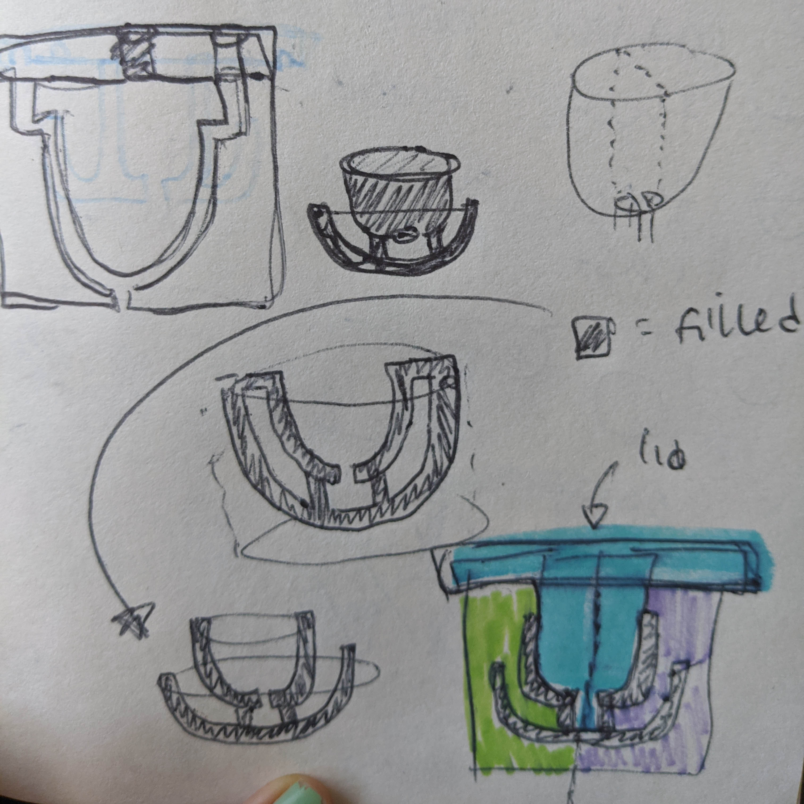

This week I created and cast my molds and put together a plan for my ~fInAL pRoJEcT~. You can find files related to my mold project here . You can read more below about my mold making adventures and the plan of attack for my final project.
I found another great grasshopper tutorial that ended up helping me make my twisted cube shape: This tutorial is actually by the same guy who did the voronoi cell tutorial! I recommend his stuff. I made a grasshopper definition that allowed me to make and customize twisted cubes and rectangles. I tried writing the definition that also subtracted out the pot’s center, but I after several tries I was cutting it close time-wise and decided to just baked the base polysurface and used boolean difference in Rhino.
From that shape, I created a mold and a mold-for-molds using various combos of bool union and bool differences. I split my mold-for-molds in half to make extraction of my mold easier. At the time, I was worried that this would cause leaks or deformations in my mold. (I later learned that in actuality, merely splitting my mold-for-molds in half was not nearly enough for easy extraction).


Finally, my mold-for-molds went to print! It took 1 day and 9 hours (holy cow). I was feeling nervous: with such a long print time, I would not have time to make another mold-for-molds if this didn’t work.

Sure enough, the split mold-for-molds didn’t print entirely square. I rubber banded the crap out of it to hold the pieces tightly together, making as flush a connection as I could.
I mixed the oomoo in equal parts- taking care to prepare my work station. After Nadya’s lecture, I was prepared for a sloppy process. I still made a mess. The oomoo stuck to everything, like some sort of space goop. I’m glad I was as prepared as I was!

Even with my split mold-for-molds, I had a tough time extracting the twisted base of my mold. The lid lifted straight out of the mold- but the bases twisted around themselves a bit. Another issue was that the molds were connected to each other- maneuvering one silicone cast affected the positioning of the other, making tears more likely. I used dish soap to help work the molds out, but still one ripped.


Next time, I’d split the mold-for-molds in a different way to make the mold easier to extract. I’ll also split up my molds into separate pieces for each part, rather than casting them all into one mold, so I don’t compromise the other mold parts while extracting another.
Finally it’s time to cast my succulent pots! I started with a plain plaster cast:
Then I experimented with some “cast in place” surfaces: pennies, seaglass, bits of terracotta pots, and different colored broken pieces of plaster. I sanded the pieces with superfine sandpaper, using water to cut down on the dust. I would have liked smaller pieces of seaglass to get more consistent coverage.


Some of the plaster molds had bubbles in them, but I kind of liked the rustic effect it had next to the “cast in place” terra cotta.

I didn’t have any succulents, but I did have some of these adorable succulent tea candles around the house. When I lit them, I was really happy with how the light interacted with the angles of my shapes.


I tried mixing plaster with some acrylic paint to color it, then made it a very watery mix to cast the plaster bits in plaster. I had to make it this way in order for the plaster to work it’s way down into the mold. But, this took FOREVER. It’s still not done curing- maybe it never will! Later, I’d like to try casting other objects in place to get different textures. I’d like to try casting around crumpled bits of aluminum foil to get a “geode-like” texture. I’d also like to test different finishes on the pots to give them a glazed, shiny look. I’m also a fan of the matte finish- but it could be cool to see how a sheen would work.
text
text


After MANY sketches, I decided the best move would be to build my final object and work with the molds and molds-for-molds directly in Rhino.
I made a grasshopper definition that produces a symmetrical cube planter and tried several methods to modify its shape. I didn’t think it would be this tough- I feel like I’m missing some obvious solution right in front of my face. I tried:
You can see the twisted cube I made in the screen shots below, along with the symmetrical planter from grasshopper
I’m going to finish designing my “final object” and start building it’s mold… and that mold’s mold (what?) This project is making my eyes go crossed.